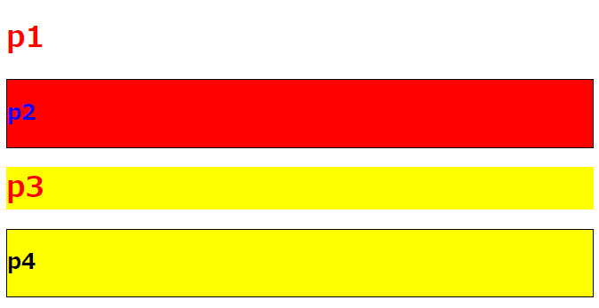

[CSS] 範囲と指定に関する選択子(全体選択子、要素選択子、孫選択子、子選択子、隣接選択子)
選択された要素の基準で隣接された要素や派生(下位)要素を選択する方法に関する記述です。
styleでアスタリスクマーク(*)はすべての要素を選択する方法です。すべての要素はfont-styleや基本padding、marginを設定する時に使いますが、すべての要素に反映があるのでよく使わない選択子です。
そしてstyle設定でタグあるいはidやclass、属性で要素を選択しますが、コンマ(,)を使えば複数選択も可能です。
例えば「p, div」といえばpタグとdivタグを選択することです。
そして孫選択子、子選択子の意味は孫選択子の場合、選択要素の中であるすべての派生タグをいうことで子選択子は選択した直下の派生タグを選択することです。
<a>
<b>
<d></d>
</b>
<c>
<e></e>
</c>
<f></f>
</a>
上の条件の構造でhtmlが作成したと思えば、aタグの孫要素は「b, c, d, e」タグになるし、子要素は「b, c」にあんることです。
つまり、「a d」の指定みたいに、aとd間にスペースを置くと、aタグの孫要素のdタグを選択することです。
子要素でみると「a > b > d」の選択子になります。
隣接選択子で「+」を使用すれば同じレベルの要素で次(派生ではない)に配置された要素、つまり「b + c」で設定するえば「c」を選択することです。「b + f」の場合はbタグすぐあとで「f」タグがないので何も選択されない結果になります。
「~」の場合は「+」みたいに派生ではなく同じレベルの後で配置された要素ですが、すぐ後ろふくめすべての要素ですね。
<!DOCTYPE html>
<html>
<head>
<title>title</title>
</head>
<body>
<div id="test">
<!-- 初めの要素 -->
<div class="p1"><h1>p1</h1></div>
<!-- 二つ目の要素 -->
<div class="p2"><h2>p2</h2></div>
<!-- 三つ目の要素 -->
<div class="p3"><h1>p3</h1></div>
<!-- 四つ目の要素 -->
<div class="p4"><h2>p4</h2></div>
</div>
</body>
</html>
/* idがtestのdivタグの孫要素のh1タグ */
div#test h1 {
color: red;
}
/* idがtestのdivタグのクラスがp2の子要素のh2タグ */
div#test > .p2 > h2 {
color: blue;
}
/* クラスがp2とp4の要素 */
.p2, .p4 {
border: 1px solid #000;
}
/* クラスがp1要素の後にあるdivタグの要素 */
.p1 ~ div {
background: yellow;
}
/* クラスがp1要素の次にあるdivタグの要素*/
.p1 + div{
background: red;
}

上の例をみれば初めは孫要素を選択するので.p1のh1と.p3のh3になります。でも.p2のh2の場合は.p2の子要素なので.p4のh2タグは当該事項ではありません。
~を使って+をつかったので先にクラスが.p1タグの後のdivタグの背景をすべて黄色に設定して、p1タグの次の要素を赤色に設定しますね。
- [CSS] ブラウザから開発する方法 (developer mode)2019/12/25 07:54:31
- [CSS] 色スタイル、グラデーション2019/12/24 07:37:22
- [CSS] アニメーション (animation)2019/12/20 20:51:38
- [CSS] トランスフォーム (transform)2019/12/19 13:00:26
- [CSS] トランジション(transition)2019/12/18 20:33:57
- [CSS] Columnスタイル2019/12/17 19:52:56
- [CSS] 整列スタイル (float)2019/12/17 00:08:54
- [CSS] 位置(position),表示(display)スタイル2019/12/13 20:08:50
- [CSS] border(枠)、余白スタイル - border, margin, padding2019/12/12 20:16:43
- [CSS] 文字スタイル2019/12/11 21:13:22
- [CSS] その他の疑似選択子 - link, visited, target, enabled, disabled, not, active, hover, focus2019/12/10 07:31:28
- [CSS] 疑似要素選択子 - fist-line, first-letter, before, after2019/12/09 07:28:27
- [CSS] 範囲と指定に関する選択子(全体選択子、要素選択子、孫選択子、子選択子、隣接選択子)2019/12/06 07:27:36
- [CSS] 疑似クラス - only-child, only-of-type, empty, empty, root2019/12/05 07:29:15
- [CSS] 疑似クラス - first-child, last-child, first-of-type, last-of-type2019/12/04 07:28:37
- [C#] 非同期ソケット通信(IOCP)-APMパターン2020/05/18 18:45:37
- [C#] 非同期ソケット通信(IOCP)-EAPパターン2020/05/15 19:31:02
- [C#] ソケット(Socket)通信をする方法2020/05/13 17:37:13
- [C#] NPOIを利用してExcelを読み込んで出力する方法2020/05/08 10:43:52
- [C#] NPOIライブラリを利用してエクセルファイルを生成する方法2020/05/07 01:49:01
- [C#] Geckoライブラリを利用してウェブスクレイピングする方法2020/05/05 00:52:26
- [C#] PDFを作成する方法(iTextSharp)2020/05/03 10:22:40
- [C#] シリアライズ(Serialization)をする方法2020/04/30 19:32:04
- [C#] dynamicタイプの動的パラメータ-DynamicObject(WinFormでASP.MVCのViewBagオブジェクトを使用する方法)2020/04/29 22:41:32
- [C#] Stringの補間式(interpolation)2020/04/27 20:39:57
- [C#] Newtonsoft.JSONライブラリを利用してJsonデータ構造を扱う方法2020/04/23 20:19:53
- [C#] EMailを送信する方法(System.Net.Mail)2020/04/22 19:00:42
- [C#] ini環境ファイルを使う方法2020/04/22 00:09:39
- [C#] 環境設定ファイルを扱う方法(System.Configuration)2020/04/20 19:37:57
- [C#] Reflectionを利用してクラス複製する方法2020/04/17 00:34:33